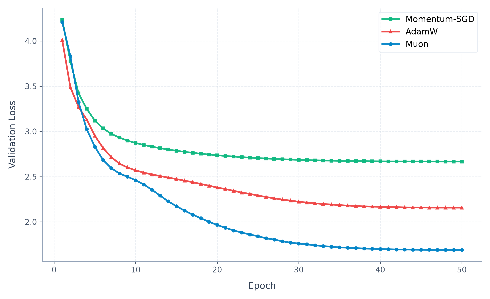

September 2026
Muon is a pretty new and well-regarded optimizer for linear layers. I think at this point it's clear that it is really useful in LLM training. I made these notes because I didn't have a strong intuition for why different optimizers work differently.
Let's visualize what our optimizer does geometrically. Say $\theta, g \in \mathbb{R}^d$, where $\theta$ is our parameter vector and $g$ is the gradient vector. Let's also make the assumption of $\lVert g \rVert = 1$. You want to choose a $\Delta \theta$ that minimizes $g \cdot \Delta \theta$ (take a $\theta$ step such that loss is minimized), such that size($\Delta \theta$) $\leq \eta$ (where $\eta$ is the learning rate).
Everything depends on what you decide on for your size function (Muon, as we'll see later, does a similar thing to AdamW that AdamW does to SGD). Say you choose the Euclidean norm for your size function (your updates under a Euclidean norm "budget" their update in directions depending on the gradient magnitude in that direction); then your constraint is $\left\| \Delta \theta \right\|_2 \leq \eta$, and your update will be $$\theta_{t+1} = \theta_t - \eta g$$
Your steps in momentum-SGD and SGD lie on a (hyper)sphere of radius $\eta$! We can even see this in action:
import torch
import torch.nn as nn
model = nn.Linear(10, 10)
lr = 0.01234
# compute gradients
x = torch.randn(5, 10)
loss = (model(x) ** 2).mean()
loss.backward()
# assumption: grad norm = 1
model.weight.grad = model.weight.grad / model.weight.grad.norm()
# take an SGD step
w_before = model.weight.clone()
opt = torch.optim.SGD(model.parameters(), lr=lr)
opt.step()
# exactly 0.012340
delta_w = model.weight - w_before
print(f"Step norm: {delta_w.norm().item():.6f}")
# prints 0.012340
An intuition for this is that it "budgets" the step such that every direction gets scaled equally to land on this hypersphere. For example, $g = [-3,4,5]$ with $\eta = 1$ is squashed down to $\Delta \theta = [0.4243,-0.5657,-0.7071]$. The 3rd element is still scaled proportionally more than the other 2! The step is just the rescaled $-g$.
The main difference between momentum-SGD and SGD is just that momentum-SGD keeps track of an exponential moving average of the gradients for less noisiness; it still chooses the same Euclidean norm.
AdamW modifies the size function to the $L_\infty$ norm. I also had no idea what this meant, but it's basically $\max_i |\Delta \theta_i|$. Since it's taking the max over all elements, an update like $[1, 2, 3]$ has the same norm as $[3, 3, 3]$ (both have an $L_\infty$ norm of 3). Ergo, your constraint is now $\max_i |\Delta \theta_i| \leq \eta$ (this means your update lies on a vertex of a square/(hyper)cube of half-side-length $\eta$). How do you minimize $g \cdot \Delta \theta$ under this constraint? I genuinely recommend pondering on this a bit (perhaps with a paper, you can pretty reasonably derive AdamW!).
Well, when $g_i$ is positive (gradient in a given direction), just make $\Delta \theta_i = -\eta$, and when $g_i$ is negative, make $\Delta \theta_i = \eta$. Your step is gonna end up looking like $\Delta \theta = [\pm \eta, \pm \eta, \ldots, \pm \eta]$. This is equivalent to $-\eta [\text{sign}(g_0), \text{sign}(g_1), \ldots, \text{sign}(g_n)]$, which can be rewritten as $$\Delta \theta_i = -\eta \frac{g_i}{\sqrt{g_i^2}}$$ Look familiar? Here's the update rule for AdamW: $$\theta_{t+1} = \theta_t - \eta \frac{m_t}{\sqrt{v_t}}$$ Aaaand what do you know, $m_t$ is a moving average of $g_i$ and $v_t$ is a moving average of $g_i^2$.
Let's verify our updates live on this cube with half-side-length $\eta$.
import torch
import torch.nn as nn
model = nn.Linear(3, 3)
lr = 0.01234
# compute gradients
x = torch.randn(2, 3)
loss = (model(x) ** 2).mean()
loss.backward()
# assumption: grad norm = 1
model.weight.grad = model.weight.grad / model.weight.grad.norm()
# take an AdamW step
w_before = model.weight.clone()
opt = torch.optim.AdamW(model.parameters(), lr=lr)
opt.step()
# all items of delta_w are +/-0.0123
delta_w = model.weight - w_before
print(delta_w)
# tensor([[ 0.0124, 0.0123, -0.0124],
# [ 0.0124, 0.0123, -0.0124],
# [-0.0124, -0.0124, 0.0124]], grad_fn=<SubBackward0>)
And thus it is on one of the vertices of our hypercube! AdamW is thus "flattening" out the gradient in every axis so they get the same step size. The step is not "budgeted" at all between different directions, they're all scaled to match one another. To take the same example, $g = [-3, 4, 5]$ with $\eta = 1$ turns into $\Delta \theta = [1, -1, -1]$. Every direction is given the same magnitude!
Now what does Muon do? It is a different choice for the size function yet again! Note that in the beginning of the blog I said "for linear layers". Why did I say that? AdamW and SGD and most other optimizers can be applied to any parameter in your network, whatever it is. Muon... can't. This is because of the size function it chooses. Don't believe me? Try it!
import torch
import torch.nn as nn
# a single number isn't a 2D matrix or arrangeable into one
w = nn.Parameter(torch.tensor(1.0))
loss = w**2
loss.backward()
# sgd and adamw work just fine!
torch.optim.SGD([w], lr=0.01).step()
torch.optim.AdamW([w], lr=0.01).step()
# throws the exception
try:
torch.optim.Muon([w], lr=0.01)
except ValueError as e:
print("Muon failed on scalar")
# with bias=True this would also fail! bias is 1D
model = nn.Linear(3, 3, bias=False)
x = torch.randn(2, 3)
loss = (model(x) ** 2).mean()
loss.backward()
# works
torch.optim.Muon(model.parameters(), lr=0.01).step()
print("Muon succeeds!")Why does this happen? Well Muon, for their size function, chose the spectral norm. Fancy name! This is a norm that does not take in vectors or scalars, only 2D matrices. Before seeing what the norm is, let's look at some intuition behind why it was chosen.
$W \in \mathbb{R}^{m \times n}$, can be viewed as a linear transformation from $\mathbb{R}^n \rightarrow \mathbb{R}^m$. In doing so, it stretches and squashes and rotates vectors from the input space to form the output space. Muon constrains this transformation itself, which is why it doesn't work on 1D vectors. It does so by asking: "what is the largest amount my step could change a vector from the input to the output?" I.e., for all $x \in \mathbb{R}^n$, where $\left\| x \right\| = 1$, what is the maximum magnitude of $\Delta \theta x$? (here $\theta$ is the parameters of the matrix).
This answer is given by the spectral norm, which is the value of the largest singular value of the matrix. If you don't remember your linear algebra too well, singular values (denoted by $\sigma$) are just the amount the matrix stretches space in a given direction. If you've heard of eigenvalues, singular values are their cousin! The singular values of a matrix $W$ are the square roots of the eigenvalues of $W^TW$.
So the constraint is $\sigma_{\max}(\Delta \theta) \leq \eta$, and again you want to minimize $g \cdot \Delta \theta$. You might be asking how the dot product is defined between matrices: you basically flatten them. Imagine flattening $g$ into a long vector of size $m \times n$, and $\Delta \theta$ into the same shape as well, and then dot producting these flattened vectors! This inner product on matrices is referred to as the Frobenius inner product of a matrix. It's also often denoted by $\operatorname{tr}(A^T B)$, where $A, B \in \mathbb{R}^{m \times n}$ (where $\operatorname{tr}(W)$ is the sum of the elements on the main diagonal of $W$. It's a fun exercise to see why this is true).
To solve this, you have to know how to get the singular values of a matrix (a process called singular value decomposition or SVD). Just in case you (like me sometimes) forget your linear algebra, any matrix $W$ can be decomposed into three matrices, $U$, $\Sigma$, and $V^T$. Here, $\Sigma$ is a diagonal matrix (zeros everywhere not on the main diagonal), corresponding to the singular values of $W$. $V^T$ can be vaguely thought of as the rotation that aligns the input space to the "singular-value basis". These directions are then stretched by $\Sigma$, and $U$ can be thought of as moving the singular-value basis to the output space. So applying this to $g$, you can get all the singular values of your gradient in the matrix $\Sigma_g$, and all the important directions in $U_g$ and $V^T_g$. Say this is your decomposition $$ g = U_g \Sigma_g V^T_g = \begin{bmatrix} 0.6 & -0.8 \\ 0.8 & 0.6 \end{bmatrix} \begin{bmatrix} 3 & 0 \\ 0 & 1 \end{bmatrix} \begin{bmatrix} 0.96 & -0.28 \\ 0.28 & 0.96 \end{bmatrix} $$ If you want to minimize the inner product, your $\Delta \theta$ should point in the same (but opposite) directions of $g$. This means $$\Delta \theta \propto -U_g V^T_g$$ What does the constraint decide for $\Sigma_{\Delta \theta}$? We've chosen our directions based on $g$, but how do we choose our scale? Well think back to the constraint of $\sigma_{\max}(\Delta \theta) \leq \eta$. The largest step we could take is when all of our singular values for $\Delta \theta$ are $\eta$. In other words, $$\Sigma_{\Delta \theta} = \begin{bmatrix} \eta & 0 \\ 0 & \eta \end{bmatrix}$$ So your final update (by factoring $\eta$ out to give the identity matrix) is given by $$\Delta \theta = -U_g \begin{bmatrix} \eta & 0 \\ 0 & \eta \end{bmatrix} V^T_g = -U_g \eta \begin{bmatrix} 1 & 0 \\ 0 & 1 \end{bmatrix} V^T_g = -\eta U_g V^T_g$$ And voila, looking at Muon's update rule you have $$\theta_{t+1} = \theta_t - \eta U_M V^T_M$$ where $M$ is just the first moment moving average of $g$, updated by the typical $M_t = \beta M_{t - 1} + (1 - \beta)g_t$. In practice, performing singular-value decomposition is time consuming, so Muon's practical implementations use a recurrence relation that gets pretty close in much less time.
And again, like always, let's verify the updates are actually like this.
import torch
import torch.nn as nn
model = nn.Linear(3, 3, bias=False)
lr = 0.01234
# compute gradients
x = torch.randn(5, 3)
loss = (model(x) ** 2).mean()
loss.backward()
# assumption: grad norm = 1
model.weight.grad = model.weight.grad / model.weight.grad.norm()
# take a Muon step
w_before = model.weight.clone()
opt = torch.optim.Muon(
model.parameters(),
lr=lr,
# this wasn't needed in AdamW because we're checking sigma
# values, and the default decay in Muon is higher
weight_decay=0,
ns_coefficients=(1.5, -0.5, 0.0),
ns_steps=50,
)
opt.step()
# all singular values of delta_w are 0.0123
delta_w = model.weight - w_before
print(torch.linalg.svdvals(delta_w))
# tensor([0.0124, 0.0123, 0.0123], grad_fn=<LinalgSvdBackward0>)Here are some empirical results from the three different optimizers (SGD, AdamW, Muon) that I did on a dummy transformer on the Tiny Shakespeare dataset, with a warmup + cosine-decayed LR:

Muon converges fastest! Of course this is not the most rigorous test, but there have been much more rigorous tests of Muon.
I hope you learned something from this! I know in the process of writing it, I learned a lot :). If you're interested, I also recommend this blog by Thinking Machines.